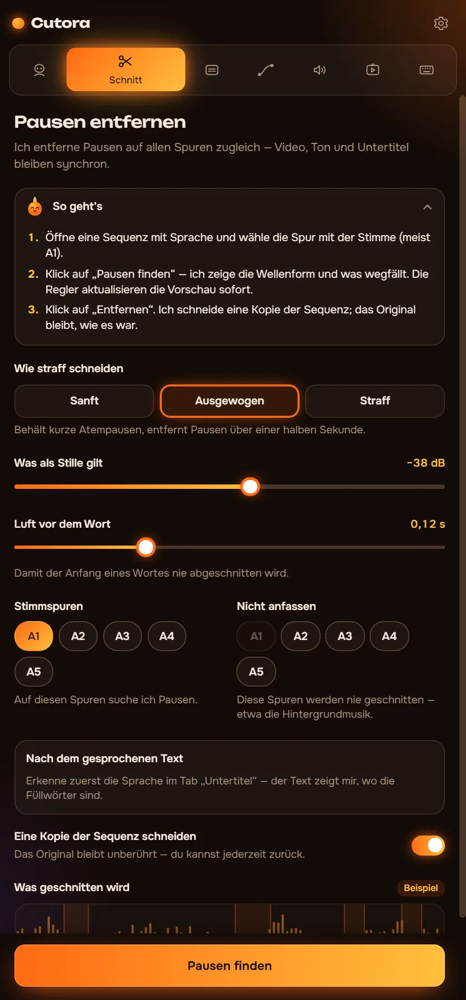
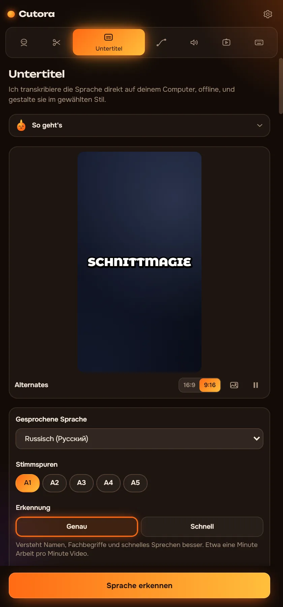
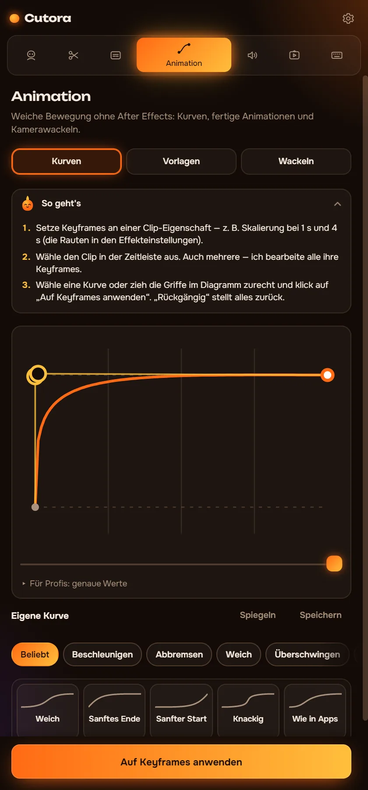
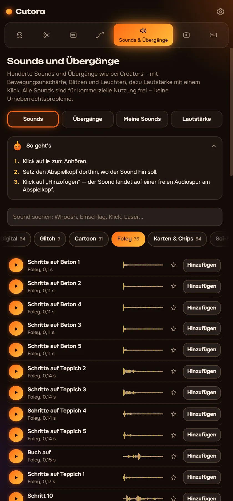
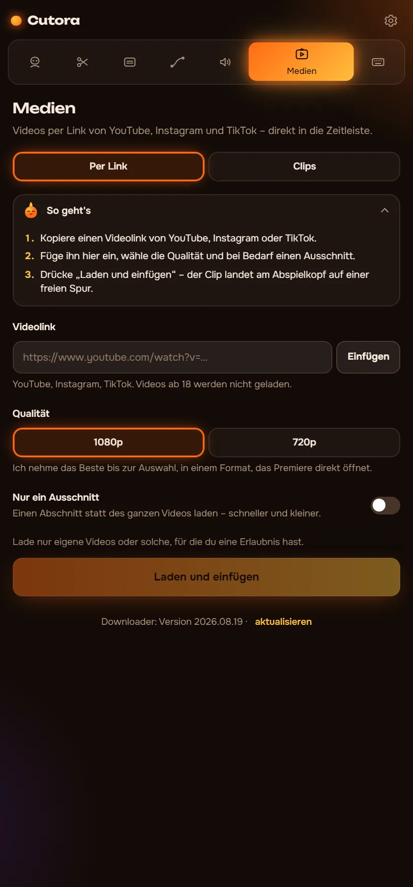
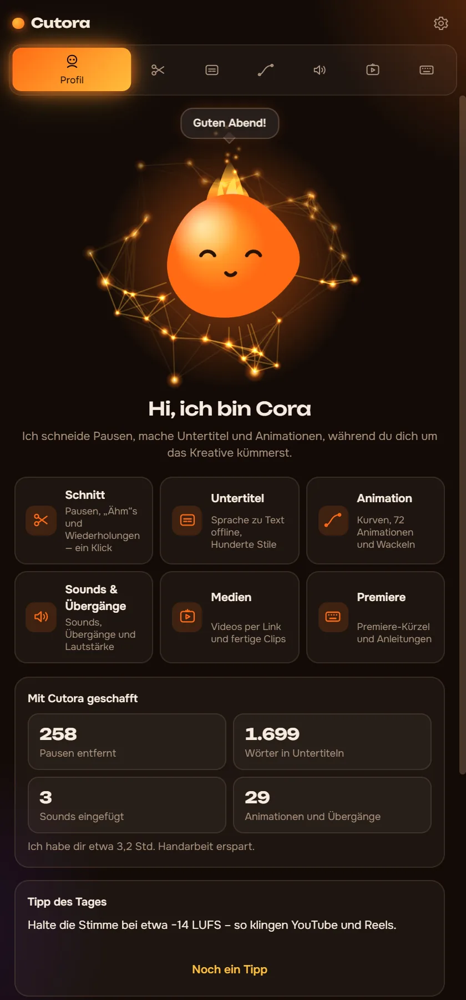

Pausen raus. Untertitel rein. Bewegung drauf.
Cutora ist ein Panel für Premiere Pro, das dir die langwierigen Teile des Schnitts abnimmt. Es läuft auf deinem Computer, deine Videos verlassen ihn nie.
- Windows, Premiere Pro 2022+
- Funktioniert offline
- Einmal zahlen
Hi, ich bin Cora. Tipp mich an!
Sieh vorher, was rausfliegt
Cutora findet die Pausen und markiert sie in der Wellenform. Leg fest, was als Stille gilt, und schneide. Hier ist ein 90-Sekunden-Clip zum Ausprobieren.
- Videolänge
- 1:30
- Kürzer um
- 0:00
In Premiere schneidet es alle Spuren gleichzeitig und schließt die Lücken. Es arbeitet an einer Kopie deiner Sequenz, und ein Strg+Z holt alles zurück.
Sechs Module, ein Panel
Jedes Modul erledigt eine Aufgabe, die du sonst von Hand oder mit einem weiteren Plugin machst.
Pausen auf allen Spuren gleichzeitig entfernen
Bild, Stimme und Musik bleiben synchron. Du siehst jeden Schnitt in der Wellenform, bevor sich etwas ändert.
- Drei Stufen oder dein eigener Stille-Pegel
- Entfernt „äh“, „ähm“ und misslungene Takes anhand des Transkripts
- Schneidet eine Kopie der Sequenz, das Original bleibt unberührt

Untertitel, die mit der Stimme mitgehen
Die Spracherkennung läuft auf deinem Computer. Wähl einen Stil, korrigier bei Bedarf ein Wort, und die Untertitel landen auf der Timeline.
- Rund 90 gesprochene Sprachen, ohne Internet
- Hunderte animierte Stile und über 160 Schriften
- Text später bearbeiten und die Untertitel per Klick aktualisieren

Weiche Bewegung ohne After Effects
Gib deinen Keyframes echtes Easing oder leg eine fertige Animation auf einen Clip.
- Easing-Kurven für beliebige Keyframes, auch eigene Kurven
- 72 fertige Animationen: Einstiege, Ausstiege und Punch-Zooms
- 25 Kamera-Shakes, von sanfter Handkamera bis zur Explosion

Übergänge mit Sound, genau im Takt
Übergänge liegen auf einer Einstellungsebene, und jeder bringt den passenden Sound mit.
- Echt aufgenommene Whooshes, Hits und Riser
- Die Lautstärke des ganzen Videos per Klick angleichen
- Eigene Soundpacks aus jedem Ordner einbinden

Footage und Videos per Link
Link einfügen, und das Video landet im Projekt. Ohne Downloader und Konverter.
- Import von YouTube, Instagram oder TikTok per Link
- Ein Pack mit Greenscreen- und Gameplay-Clips
- Jedes Einfügen lässt sich wie jede andere Änderung rückgängig machen

Cora beantwortet deine Fragen
Hängst du fest? Frag Cora, wie etwas in Cutora oder beim Schneiden geht. Sie kennt jeden Tab und die Grundlagen eines guten Schnitts.
- Antwortet ohne Internet
- Spricht alle sechs Sprachen der Oberfläche
- Eine kurze Tour beim ersten Start

Cutora für Premiere Pro
$29.99$39
Eine Zahlung. Kein Abo.
- Alle sechs Module: Schnitt, Untertitel, Bewegung, Sounds, Medien und Cora
- Dein Schlüssel läuft auf zwei Computern
- Offline nutzbar nach einer Aktivierung
- Oberfläche in 6 Sprachen
- Greenscreen- und Gameplay-Pack inklusive
Bezahlen per Bankkarte über Lava.top oder mit Krypto (USDT).
Fragen
Was brauche ich für Cutora?
Windows 10 oder 11 und Adobe Premiere Pro 2022 oder neuer.
Läuft es auf dem Mac?
Noch nicht. Cutora läuft vorerst nur unter Windows.
Wie bekomme ich es nach dem Kauf?
Du bekommst eine E-Mail mit Download-Link und Lizenzschlüssel. Die Installationsanleitung hier führt dich in fünf Minuten durch alles.
Auf wie vielen Computern kann ich es nutzen?
Auf zwei. Wenn du den Computer wechselst, schreib dem Support, und wir übertragen deinen Schlüssel.
Braucht es Internet?
Nur zum einmaligen Aktivieren des Schlüssels und für den Import per Link. Schnitt, Untertitel und Bewegung funktionieren offline.
Welche Sprachen werden unterstützt?
Das Panel spricht Englisch, Russisch, Spanisch, Portugiesisch, Deutsch und Arabisch. Untertitel funktionieren mit rund 90 gesprochenen Sprachen.